4/30/2025 - Jarvis Peak
With the days getting longer and it still being light well past 8:30 pm, I went on a hike in the very southwest corner of the state near Arizona. From the front door of the house looking south are several peaks and I have wondered if there is a way to hike them. Jarvis Peak was in the area so I took a road past Gunlock State Park lake and turned off onto a jeep road. After a few hundred feet the road got quite rough so I parked the car and hiked iin from there, which is what I think most people do. After about 2 miles of hiking I got off the trail and hiked up along a steep ridge, dodging thick bushes and juniper trees up to a saddle. Afterwards was a short rock scramble to the peak where the views opened up to look over St George. Some Zion peaks could be seen in the far distance and to the east was the Virgin River Gorge. The partly cloudy 70 degree temperature was really nice.
Jarvis Peak in middle above an initial ridge
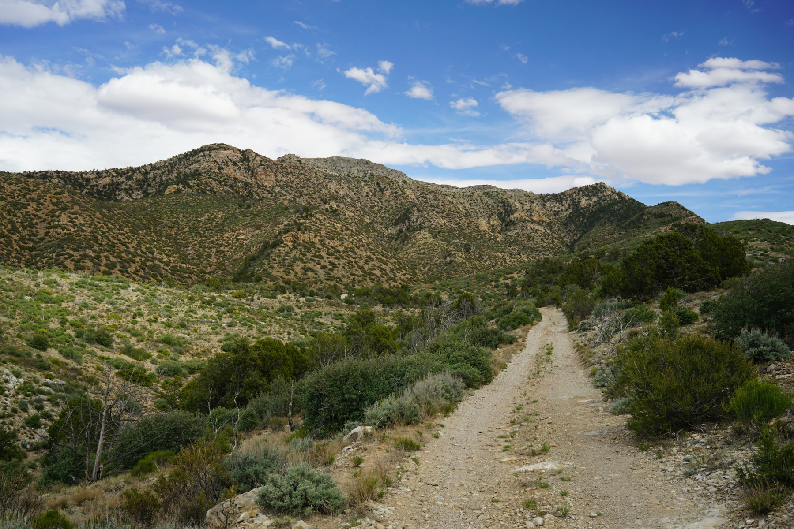
Looking backwards to West Mountain Peak
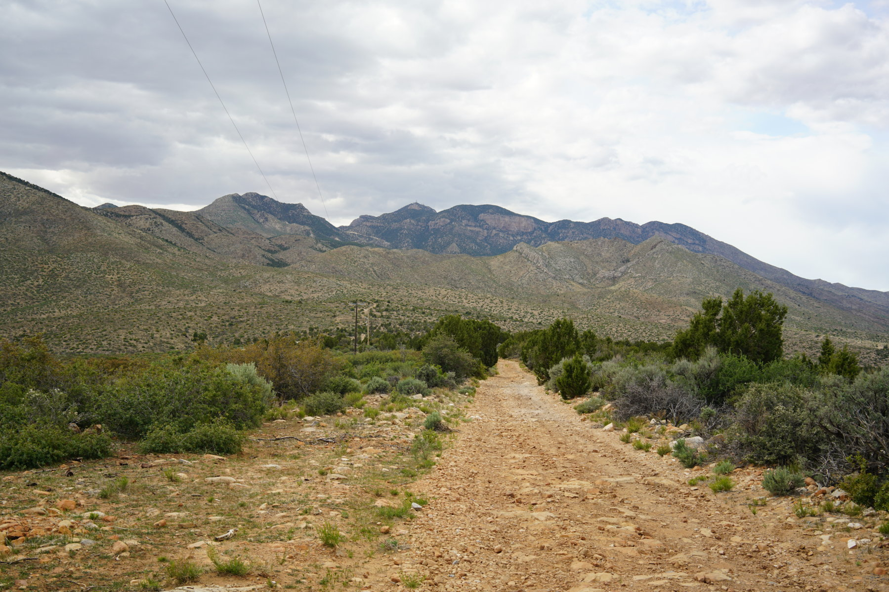
Another peak, unnamed to the east
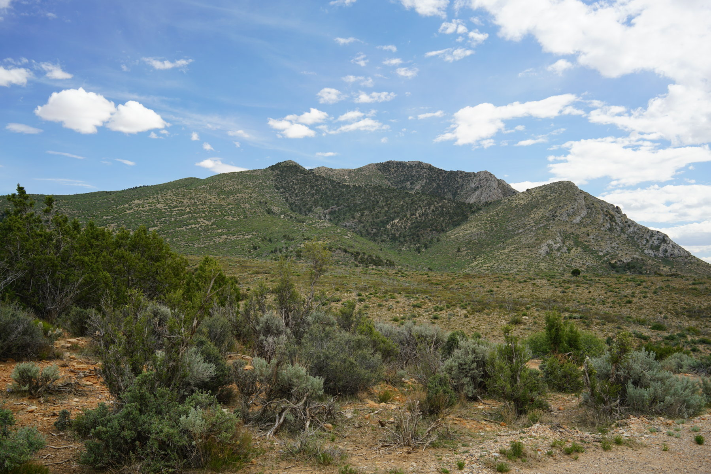
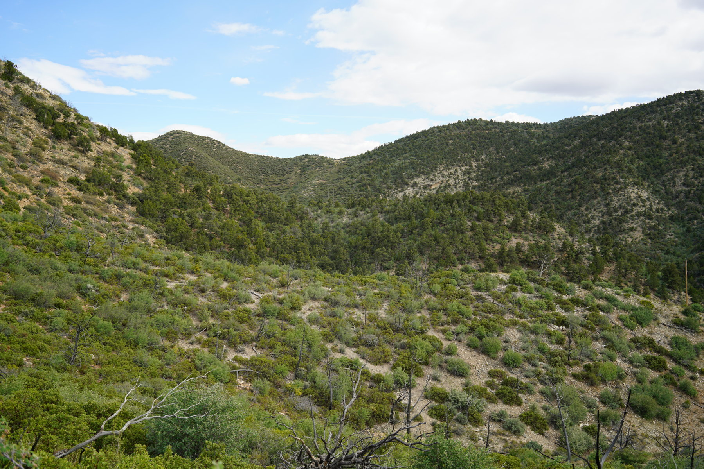
The route cut off the road to the left here and went up along the ridgeline
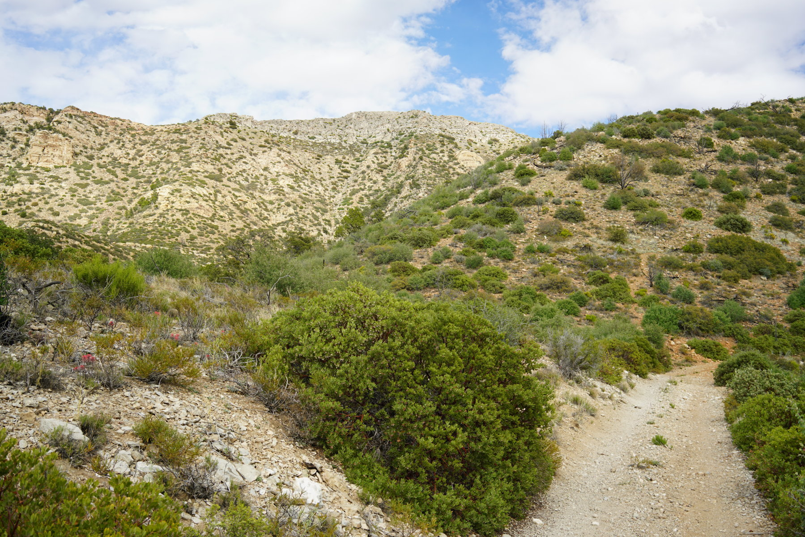
Looking back
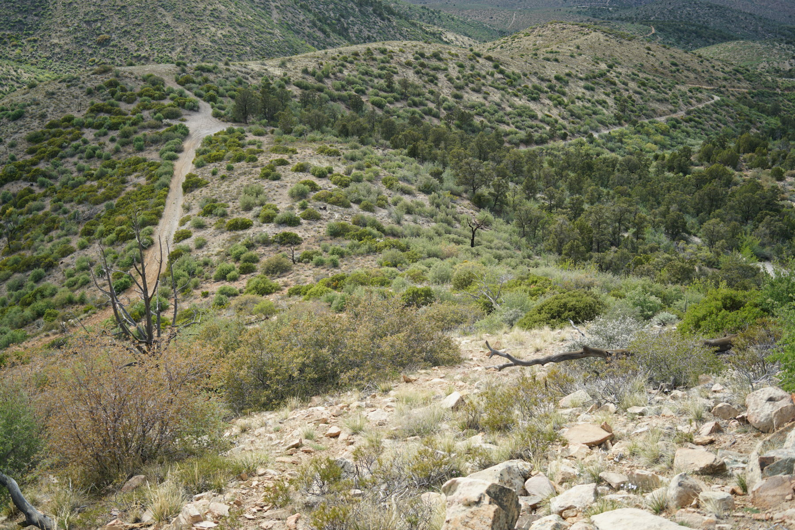
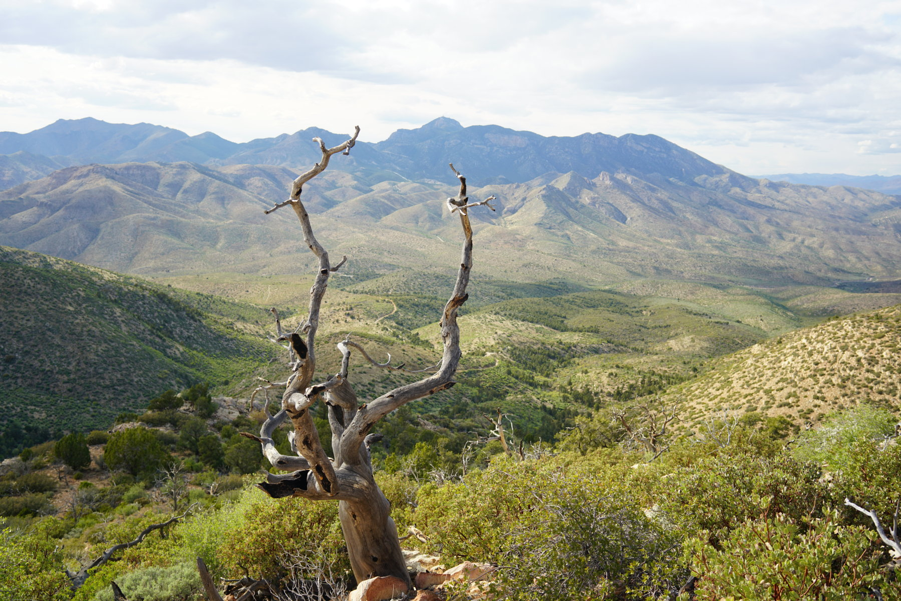
Hiking up
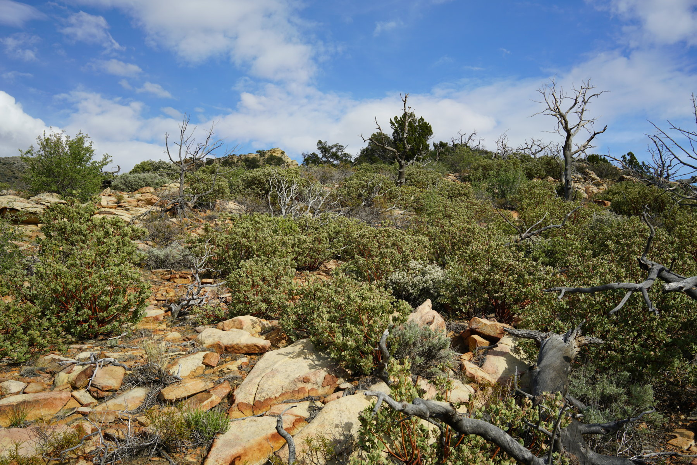
Almost at the peak
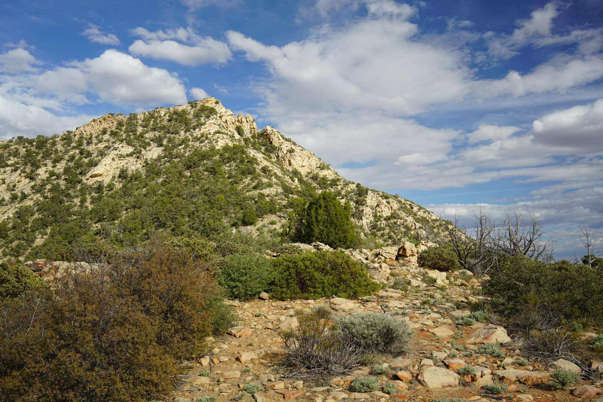
Views from the top, towards Ivins/St George and the Pine Valley Mountains in the distance
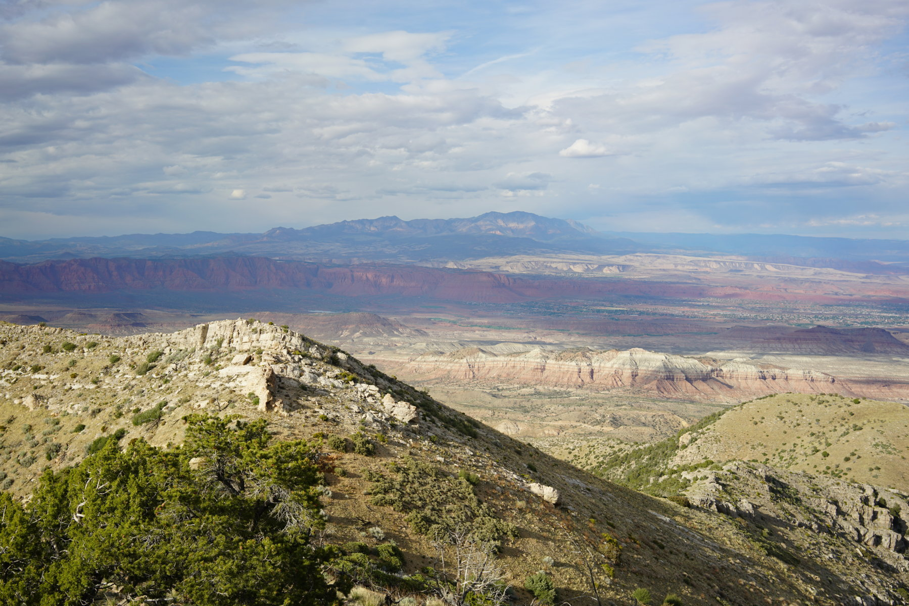
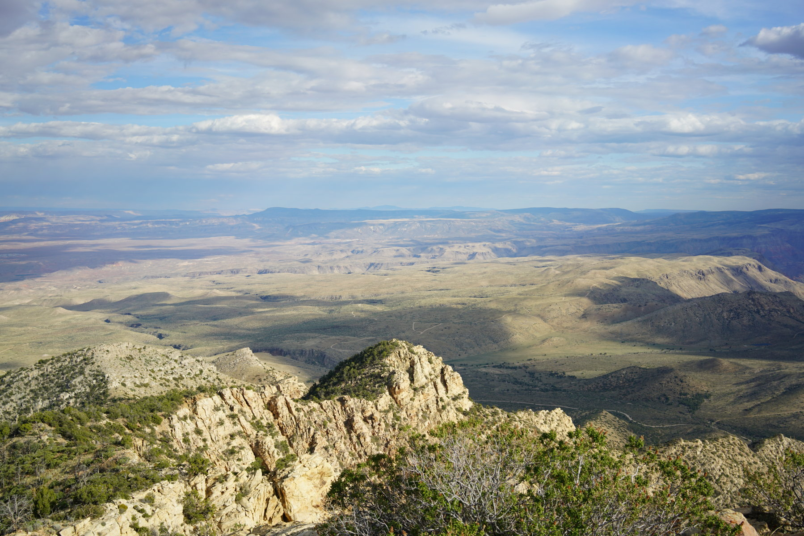
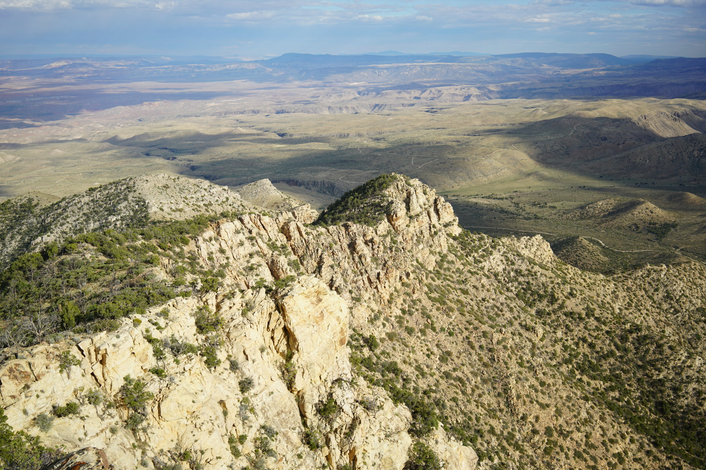
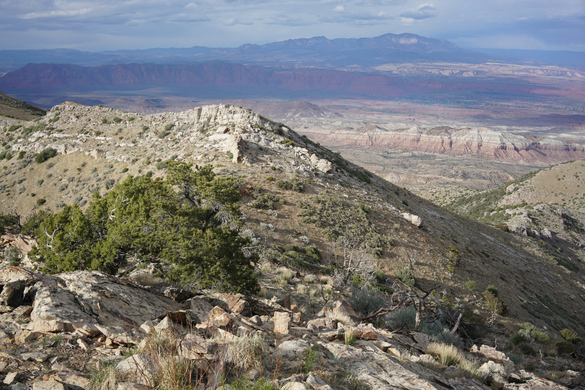
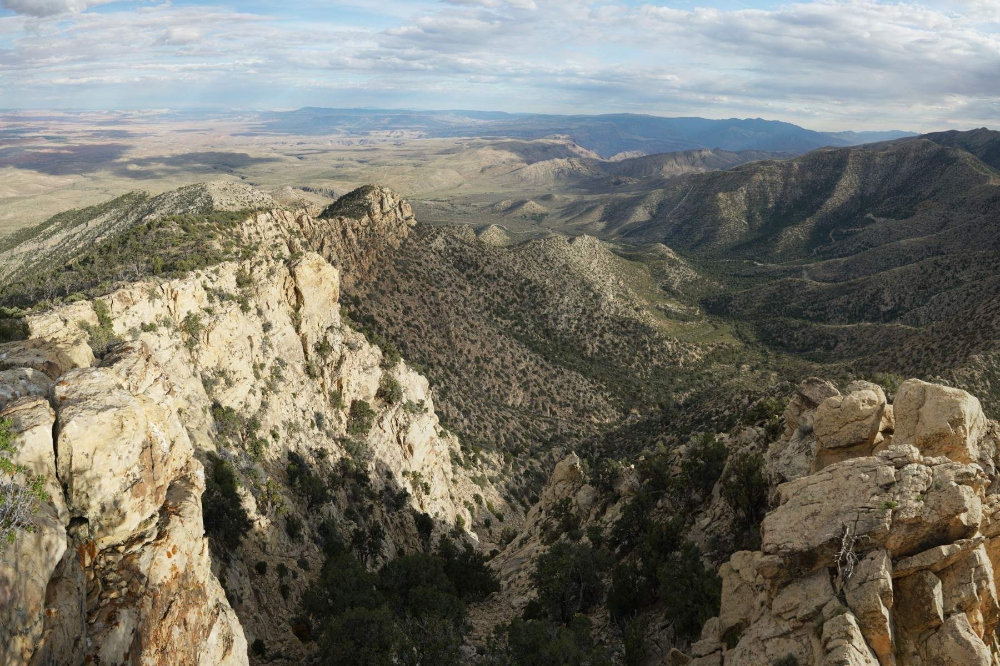